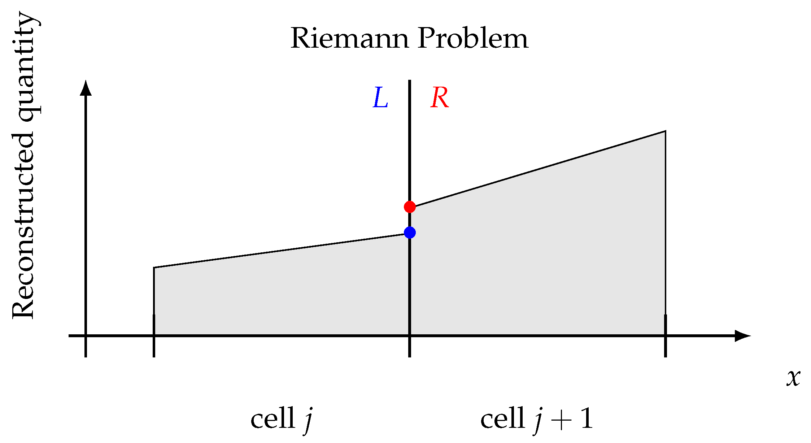

Numerical PDE
Implementing Finite Difference
Consider the Lax scheme:
$$ u_j^{n+1} = \frac{1}{2}(u_{j+1}^n + u_{j-1}^n) - v \frac{\Delta t}{2\Delta x} (u_{j+1}^n - u_{j-1}^n) $$How do we implement it in C++?
Implementing Finite Difference
This code fragment implements the Lax scheme:
std::vector u(Nx), u_next(Nx);
for (int j = 1; j < Nx - 1; j++) {
u_next[j] = 0.5 * (u[j+1] + u[j-1])
- (v * dt * 0.5 / dx) * (u[j+1] - u[j-1]);
}
u = u_next;
Boundary Conditions
What happens at the boundary?
At $j = 0$, $j - 1$ would give us a negative index for the array, which will result in a segmentation fault.
Therefore, it is customary to reserve a layer of "ghost cells" at each boundary. The physical domain goes from $j = 1$ to $j = N_x - 2$. $j = 0$ and $j = N_x - 1$ are the ghost cells.
Boundary Conditions
What should be the values in ghost cells?
- For periodic boundary condition, $u(0) = u(L)$, we can copy over the values
from the other end of the domain:
u[0] = u[Nx - 2]; u[Nx - 1] = u[1]; -
For Neumann boundary condition $\partial u/\partial x = 0$ at the
$x = 0$ boundary, we can set $u_0 = u_1$.
u[0] = u[1]; -
For Dirichlet boundary condition $u = 0$ at the
$x = 0$ boundary, we can set $u_0 = -u_1$.
u[0] = -u[1];
Data Output
Now we have a lot more data than when solving an ODE. It's impractical to keep the solution at every time step.
A typical solution loop may look like this:
while (t < t_end) {
update(dt);
t += dt;
// Some way to determine when to output data
if (t > n * output_dt) {
output();
n += 1;
}
}
Data Output
How do we output the data?
One way is to write the data to a text file:
void output(int n) {
std::ofstream f("data" + std::to_string(n) + ".csv");
for (int j = 0; j < Nx; j++) {
f << x[j] << "," << u[j] << std::endl;
}
}
2D Arrays
In 2D, our grid has two indices $(i, j)$. We need to represent the unknown function $u_{i,j}$ as a 2D array.
However, there is no 2-dimensional memory. Computer RAM is always linear. We need to represent a 2D array in 1D memory.
Memory Mapping
Consider a 2D array $u_{i,j}$ with $i = 0, 1, \ldots, N_x - 1$ and $j = 0, 1, \ldots, N_y - 1$.
There are two popular ways to map this to 1D memory:
- Row major: $n = j + i \times N_y$. The last index is contiguous in memory.
- Column major: $n = i + j \times N_x$. The first index is contiguous in memory.
C/C++ is often considered to be using row major when defining
multi-dimensional arrays using A[i][j]. Numpy also
uses row major by default.
Fortran and MATLAB use column major for their multi-dimensional arrays.
Memory Mapping
I recommend: do your own memory mapping explicitly. Define 2D (or higher dimensional) arrays
as a single std::vector<double>. Resize it to $N_x \times N_y$.
To access the element $u_{i,j}$, use the either the row major or column major formula, but be consistent. For example: $$ n = i + j \times N_x $$
std::vector u(Nx * Ny);
for (int j = 0; j < Ny; j++) {
for (int i = 0; i < Nx; i++) {
int n = i + j * Nx;
// Do something with u[n]
}
}
Write the contiguous loop as the inner loop.
Boundary Conditions
Ghost cells in 2D becomes 1D layers at each boundary.
For periodic boundary condition, we can copy over the values from the other end of the domain:
for (int j = 0; j < Ny; j++) {
u[j * Nx] = u[j * Nx + Nx - 2];
u[j * Nx + Nx - 1] = u[j * Nx + 1];
}
for (int i = 0; i < Nx; i++) {
u[i] = u[(Ny - 2) * Nx + i];
u[(Ny - 1) * Nx + i] = u[Nx + i];
}
Data Output
CSV files can typically contain a single 2D matrix. More sophisticated binary data format is often used to write multiple data components.
In production use, the HDF5 data format is widely used in scientific computing. It is a portable binary data format that can store multiple data components in a single file. It is also self-describing, meaning that the data format is stored in the file itself.
HDF5 is supported by many programming languages, including C/C++, Python, MATLAB, and Julia. The HDF5 library has a parallel version, allowing multiple processes to write to the same file, which is useful for parallel computing.
Project 2
In Project 2, we will solve the equations for an ideal fluid:
$$ \begin{align} \frac{\partial \rho}{\partial t} + \nabla \cdot (\rho \mathbf{v}) &= 0 \\ \frac{\partial \mathbf{v}}{\partial t} + (\mathbf{v} \cdot \nabla) \mathbf{v} &= -\frac{1}{\rho} \nabla P \end{align} $$These are called "Euler equations". They are the limit of Navier-Stokes equations when fluid viscosity becomes zero.
Finite Volume Method
The fluid equations can be written in a conservative form:
$$ \frac{\partial Q}{\partial t} + \nabla \cdot \mathbf{F} = 0 $$where $Q$ is one of the conserved quantities.
This equation says that the change of $Q$ in a volume is determined only by the divergence of its flux $\mathbf{F}$. It can only flow from one place to another, but cannot be created or destroyed.
Finite Volume Method
For example, the flux of fluid density $\rho$ is $\rho \mathbf{v}$, so its equation is:
$$ \frac{\partial \rho}{\partial t} + \nabla \cdot (\rho \mathbf{v}) = 0 $$Finite Volume Method
The finite volume method exploits this structure, allowing us to write the update as:
$$ \begin{align} \int_\mathrm{cell}Q^{n+1} \mathrm{d}V &= \int_\mathrm{cell}Q^n \mathrm{d}V - \Delta t\int_\mathrm{cell} \nabla \cdot \mathbf{F} \mathrm{d}V \\ &= \int_\mathrm{cell}Q^n \mathrm{d}V - \Delta t\int_\mathrm{boundary} \mathbf{F} \cdot \mathrm{d}\mathbf{S} \end{align} $$Define $\bar{Q}$ as the average $Q$ in each cell, we can write: $$ \bar{Q}^{n+1}\Delta V = \bar{Q}^n \Delta V - \Delta t\sum_\mathrm{faces} \mathbf{F} \cdot \mathbf{S} $$
$\rho$ by itself is a conserved quantity, and $\int_\mathrm{cell}\rho \mathrm{d}V$ is the mass in the cell. This is what we use as one of the conserved quantities in Project 2.
Finite Volume Method
There are many ways to construct the fluxes at the cell faces. One way is the Rusanov flux:
$$ F = \frac{1}{2}(F_L + F_R) - \frac{1}{2} \max(v_L, v_R)(Q_R - Q_L) $$Subscript $L$ and $R$ are quantities calculated using the fluid variables in the cell to the left and right of the face. This is what we will be using in Project 2.
Kelvin-Helmholtz Instability
The Kelvin-Helmholtz instability occurs at an interface in a fluid where two sides move at different velocities:
Kelvin-Helmholtz Instability
The KH instability is ubiquitous in nature:
Kelvin-Helmholtz Instability
The KH instability is ubiquitous in nature:
Kelvin-Helmholtz Instability
Why use finite volume? This is the result from the usual Lax method:
Numerical diffusion is so strong that it completely overwhelms the instability.
Finite Volume Method
To capture discontinuities in the fluid, an even better way is to introduce a Riemann solver at each cell boundary.
Finite Volume Method
The KH instability with a Riemann solver: